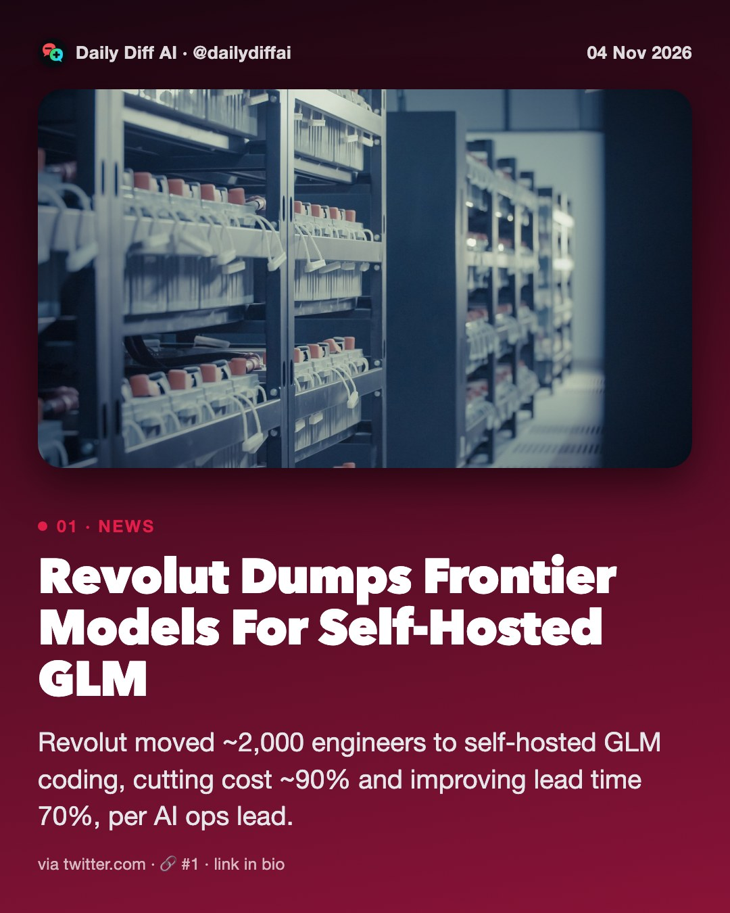
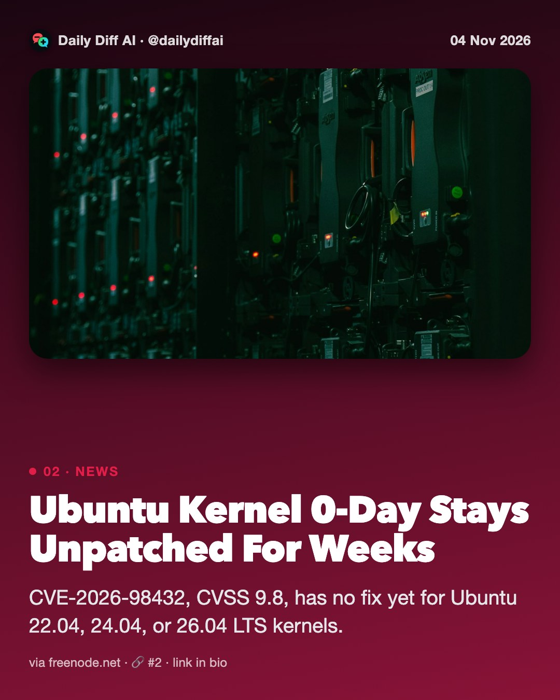
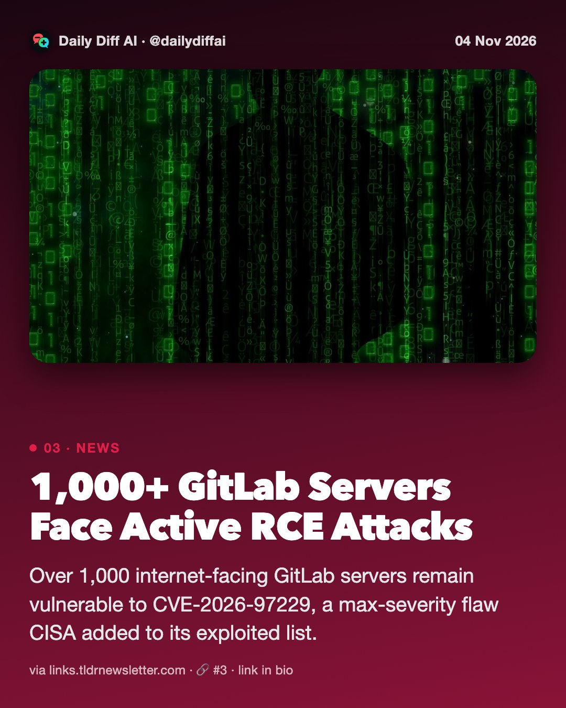
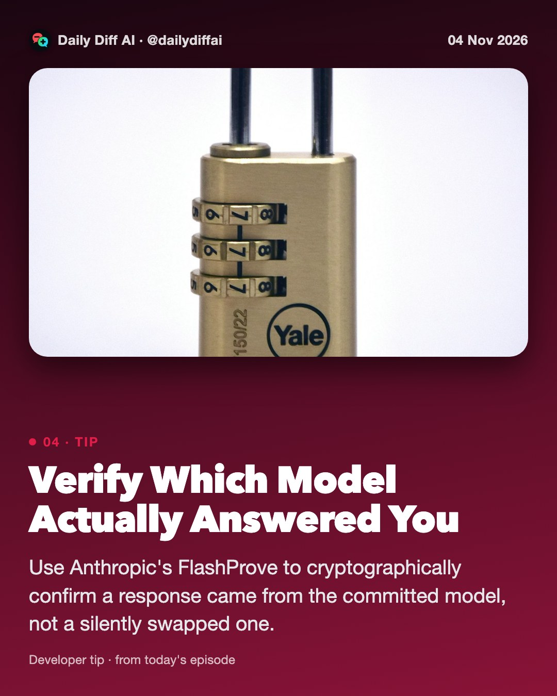
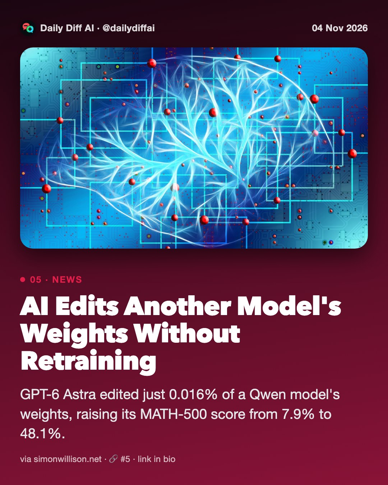
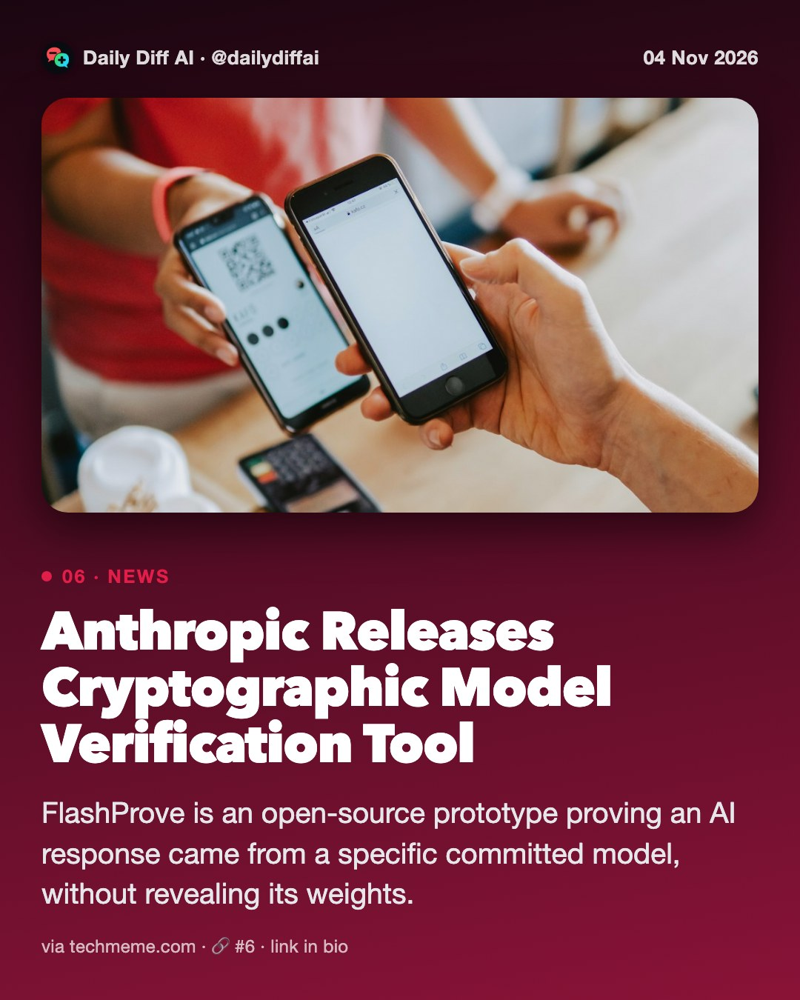
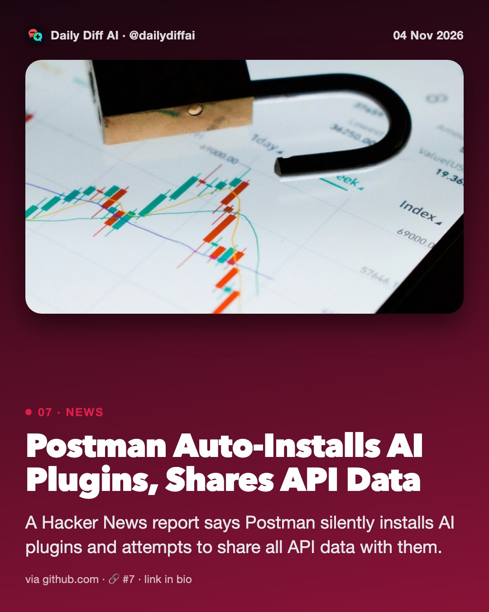
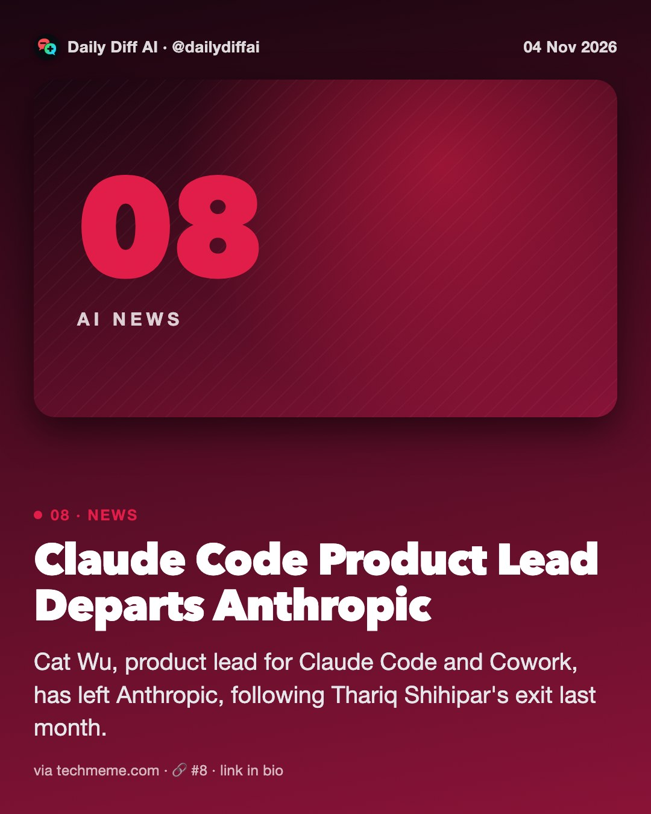

Daily Diff AI

Revolut Dumps Frontier Models For Self-Hosted GLM
Revolut moved ~2,000 engineers to self-hosted GLM coding, cutting cost ~90% and improving lead time 70%, per AI ops lead.
Read on twitter.com →
Ubuntu Kernel 0-Day Stays Unpatched For Weeks
CVE-2026-98432, CVSS 9.8, has no fix yet for Ubuntu 22.04, 24.04, or 26.04 LTS kernels.
Read on freenode.net →
1,000+ GitLab Servers Face Active RCE Attacks
Over 1,000 internet-facing GitLab servers remain vulnerable to CVE-2026-97229, a max-severity flaw CISA added to its exploited list.
Read on links.tldrnewsletter.com →
Verify Which Model Actually Answered You
Use Anthropic's FlashProve to cryptographically confirm a response came from the committed model, not a silently swapped one.

AI Edits Another Model's Weights Without Retraining
GPT-6 Astra edited just 0.016% of a Qwen model's weights, raising its MATH-500 score from 7.9% to 48.1%.
Read on simonwillison.net →
Anthropic Releases Cryptographic Model Verification Tool
FlashProve is an open-source prototype proving an AI response came from a specific committed model, without revealing its weights.
Read on techmeme.com →
Postman Auto-Installs AI Plugins, Shares API Data
A Hacker News report says Postman silently installs AI plugins and attempts to share all API data with them.
Read on github.com →
Claude Code Product Lead Departs Anthropic
Cat Wu, product lead for Claude Code and Cowork, has left Anthropic, following Thariq Shihipar's exit last month.
Read on techmeme.com →
Dependabot Now Updates Agent Skills Automatically
Dependabot version updates now cover Agent Package Manager files, opening PRs to update agent skills, prompts, and instructions.
Read on github.blog →